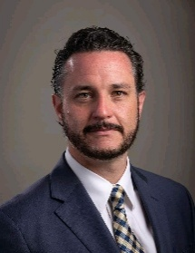
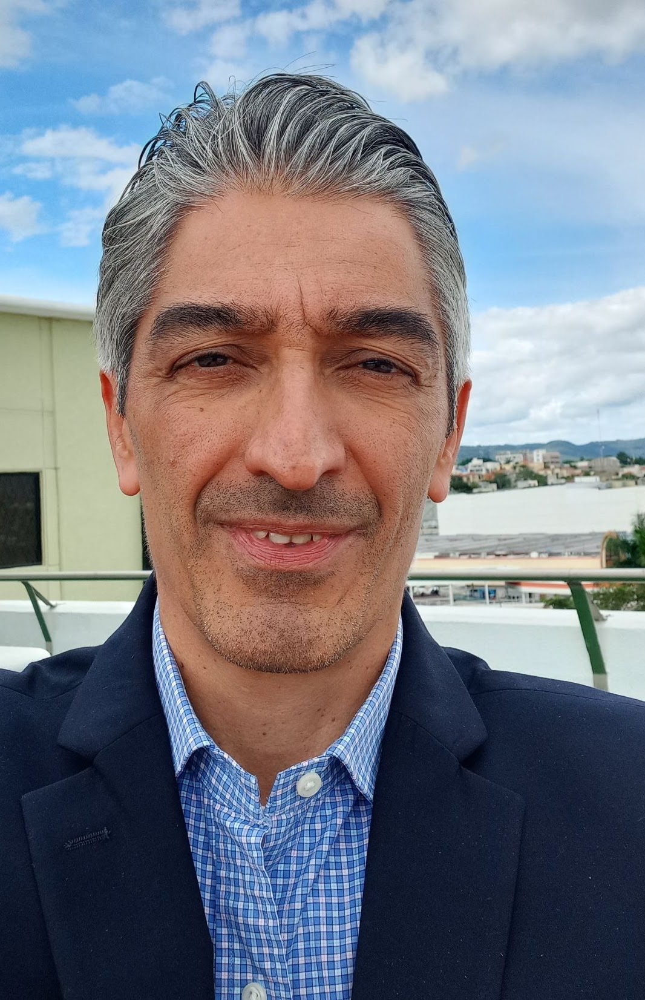
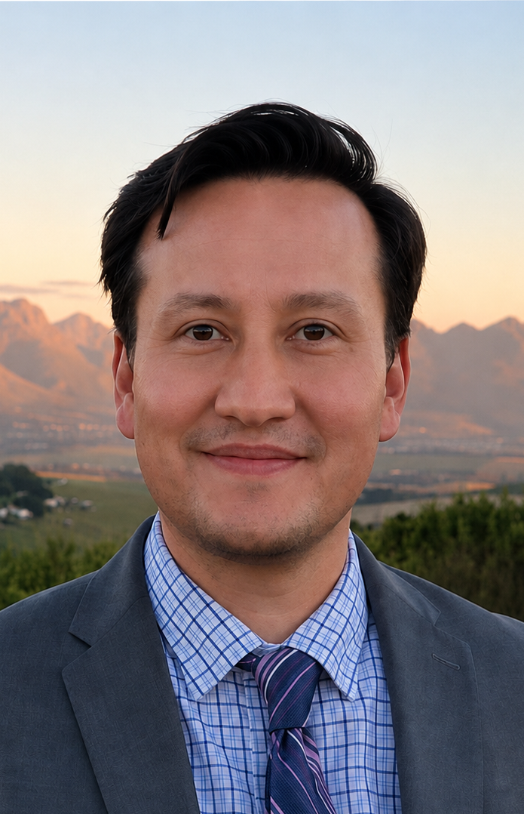

Akito Kamei
Studies how education, health, and basic services shape human development, using experiments and large datasets.
Research areas
Research profile ↗Find sections and research areas.
Meet the researchers and research professionals behind the Center’s work.
Studies how education, health, and basic services shape human development, using experiments and large datasets.

Examines digital transformation, artificial intelligence, and business decisions, including organizational ethics and gender inclusion.
Studies how institutions and policy shape development, resource use, investment, and economic decision-making.
Studies labor markets, disability, and educational inequality, with interests in institutions and urban development.

Studies monetary policy, inflation, and forecasting, applying econometric methods to the Mexican economy.

Investigates pension sustainability and economic history, alongside financial economics and competition policy.
Examines how educational trajectories shape employment opportunities, with broader interests in poverty and inequality.
Studies inequality and intergenerational mobility, including how family background and institutions shape economic opportunities.
Applies econometrics and machine learning to inflation, household behavior, health, and labor markets.
Uses applied microeconometrics to investigate health investments, poverty, labor markets, and public policy.
Uses econometrics and municipal data to examine violence, economic incentives, and risk in Mexico.
Studies poverty and human capital, including how child labor and workplace risks affect health.
Directory adapted from the Center’s source site ↗. Some names are shown in the abbreviated form supplied there.